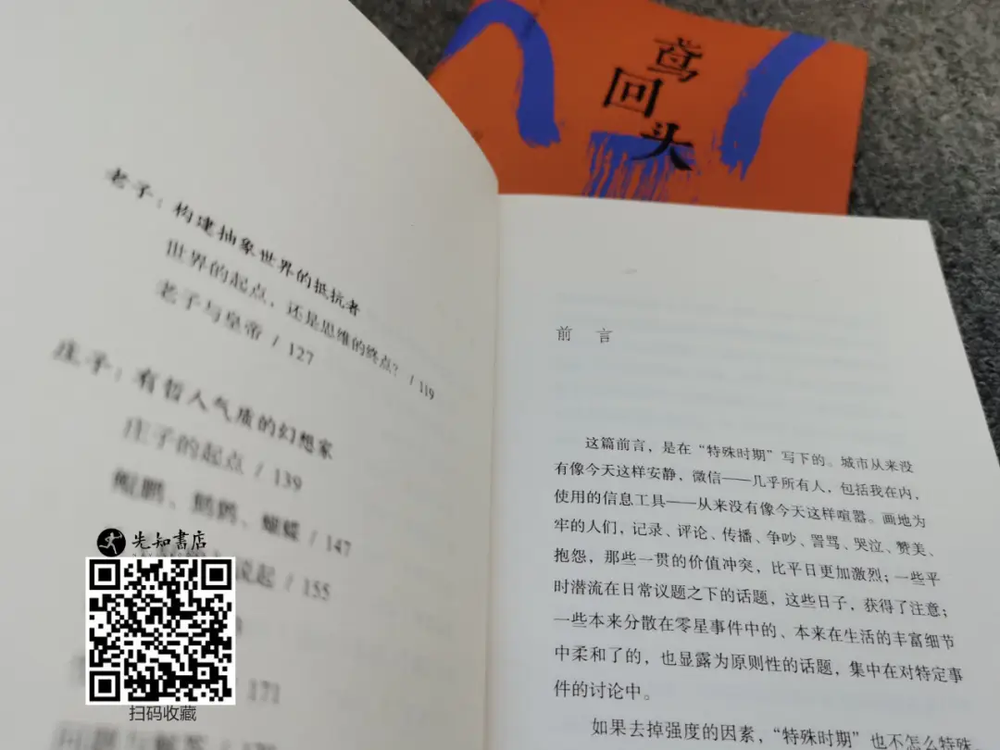

他的文字，
一针见血，却又看不到血
文：网摘 编：李强
青年学者羽戈说：我们认识一位作家，往往通过他的文字。 读刀尔登却相反，我是先听说他的传奇，再留意他的文章。
《中国好人》的封面，印了一句令人瞠目的话：“中国杂文，鲁迅、王小波之后，幸好还有刀尔登。”
这应是出版商的手笔，依刀尔登的谦逊与淡泊，必定不屑于这般宣传自己。
其实，这不是褒义更不是贬义，而是实实在在的评价，没有夸张，没有半点水分，就是这样自然而然的流露，能够担当得起，够硬气。
单论杂文，刀尔登与鲁迅，可比性实在不大：鲁迅的杂文，并不以说理见长；刀尔登杂文的一大特色，恰是说理。
与擅长说理的王小波相比，刀尔登的文字功夫似乎更胜一筹，其表述机警、明快，力求一剑封喉，就此而言，却与鲁迅相近了。
许多人眼中的刀尔登，不是异人，而是通人。
文人的世界，需要这样的人才，需要更多这样的敢说，会说，说的清楚，说的透彻的人才。
就像《中国好人》中《序》缪哲说的那般，“那一年高考，刀兄夺了鄙省的魁元，唯这一经历，成了他‘平生最大的不体面事’”。
而事实上就是这样，无论是文科状元也好，省状元也好，这些光环与别人而言是荣誉，于刀尔登来说，真不算。
这不是谬赞，而是文字最能说明一切。
▍刀尔登写作的当今
是汉语史上最暗淡的一页
就像曾有人说的那般，“刀兄写作的当今，是汉语史上最暗淡的一页。人们所知的词汇，似仅可描画人心的肤表，不足表精微，达幽曲。所用的句法，亦恹恹如冬蛇，殊无灵动态。名词只模糊地暗示，不精确地描述。动词患了偏瘫，无力使转句子。形容词、副词、与小品词等，则如嫫女的艳妆，虽欲掩、然适增本色的丑劣。”
仔细看一看当今的文学著作，看一看当下的时文热点，大家怕的还多吗？大家写的能入眼吗？看了那么多文学作品，有几个是能够经得起推敲和深思的呢？
然而，《中国好人》却不同，以阮大铖的“制造小人”为例。
我对东林党、复社诸子的行动，颇有些非议，尝言“君子一旦误国，往往尤甚于小人”。然而君子小人之说，更多是道德标签，实无助于我们深入了解历史迷局。
刀尔登“制造小人”一文，则更进一步，诠释东林党人为什么要集矢于阮大铖：“因为团体需要公敌，来把集体凝聚起来；更重要的是，好人主义需要坏人，来做制度性失败的替罪羊。”
“制造小人”可与“打严嵩”并读。严嵩恶名昭著，刀尔登却说，事实上，严嵩谈不上有多好，正如谈不上有多坏。至少他在世之时，名声不差。
严嵩被打，沦为过街老鼠，源于两个人（徐阶、王世贞）和一种观念。这种观念便是“泛德论”：“以为道德冲突乃是社会冲突的主干，我们的失败，不是自己无能，而是有坏人在捣鬼。明朝政治一塌糊涂，捉坏蛋运动便格外蓬勃；反过来说，因为捉坏蛋运动太蓬勃，所以一塌糊涂。嘉靖后期政治失败，不能不有替罪羊。”
从捉坏蛋到制造小人，从严嵩到阮大铖，这一点，不妨当作读解中国史的密匙。甚至不惟历史，如今依然有用。君不见，现在一有冲突，都要先揪出一个内奸、恶棍、蛀虫么？
《中国好人》所辑录的文章，以史论为主。
刀尔登论史之长，不在考据，他所使用的史料，几乎都是大路货。但他却能用大路货的史料，用独特的视角和通达的理论把历史描写的绘声绘色。
徐晓说，刀尔登追求的不是深刻，而是刁，这话止有一半的道理。
▍刀尔登一针见血，可又看不到血
刀尔登的作品，可谓是一针见血，可又看不到血。
因为，着实你很难看到那样的惨烈，无病呻吟，很难看到那些不必要的废话，更难看到为了所谓的情怀而写情怀的句子。
每一个字，每一句话，更像是说一件事的现状，你去看看，你去听听，你去体验体验，看看是不是如此？
如果觉得我有半点夸张，可以用文中的作品说话，来反驳我，但我觉得没有几个人会去反驳，就像这么好的作品也不见得真的有几个人去看。
比如，刀尔登讲“得民心者得天下”是一种极大的谬误，更合实情的一句话，是“得天下者得民心”。
古代，帝王得天下，总要说上膺天命，下餍民心，而非智竞力争而来。天命如何，人不知鬼不觉，你说什么便是什么好了。
至于民心，似乎是有些准儿的事，所以不但帝王借此来合成王朝的合法性，老百姓也跟腔学调，拿它来增加自己的幸福感：瞧啊，我就是天视天听的民！我就是载舟覆舟的水！
还有格言：“得民心者得天下”——很动听，然而可惜，是句谎言。
一天，朱元璋微服出行，走到三山街，在一个老太太门口歇脚。听说老太太是苏州人，便问张士诚在苏州如何。老太太说，张士诚不战而降，苏州人不受兵戈之苦，很感念他的恩德。第二天朱元璋在朝中发牢骚：京师十万人，怎么没有一个人能像这个老太太，背地里说我的好？
张士诚为人宽厚，比朱元璋更得人心，但得天下的不是他。朱元璋起兵后行“寨粮”、“检括”，与剽掠无异，却能得天下。
他高兴地说：“大明日出照天下，五湖四海温暖融融。”这位弥赛亚，对民心很可能别有自己的见解。比如，他或许已觉察到民心和民意是两回事。
曾有十三人因为说“朝廷法度厉害”，全家成年男子都被处死，妇女流放。他的一条有名的榜令，是禁止人“不思朝廷凡事自有公论，但不满所欲，便生议论，捏写匿名文书，贴在街巷墙壁”，违者全家处死。
刀尔登说：“管不了你的心，还管不了你的嘴呀？未得表露的民心，总没什么大用。”
相比刀尔登的直言，大多数写作者，为了蹭蹭热点，然后自欺欺人的觉得自己学识渊博，可是为大众，为社会，为人类又做出了什么贡献呢？
可曾在文中说过几句真话，可曾在说真话的时候就直接说出来，说清楚，遮遮掩掩，这叫人猜，那叫人想，舆论大众，娱乐大家，这样的作品还少吗？
借着一点虚假的情感，骗取观众的眼泪，不，是骗取某些无知的观众的眼泪，继而为其的商业互吹。
事实上，《中国好人》也不过是作者的讽刺之语。本书不断在阐明一个事实，那就是帝制时代，中国人道德的普遍下降，其中第一个迹象，就是不关心事实，小小百姓，有多少信息来源呢？便在今天，辨别真相，也是累人的事。容易的办法，还是把自己从这一负担解脱，让别人来告诉我谁是“坏人”，我只负责吃掉他。
▍刀尔登的文字，是“文明堕落的一阻力”
刀尔登的文字，则是出乎其时代。
他的名词有确义，动词能使转，小品词的淡妆，弥增其颜色；至若句式，则如顽童甩的鞭子，波折而流转。
故刀尔登的友人们——称其是“文明堕落的一阻力”。 语言与人心或文明的关系，是古来的老话题。霍尔姆斯论伊丽莎白朝的语言说：“语言腐坏了。臭气还熏染了英国的良心。”这是以语言的腐败，为文明腐败的祸首。
《汉书》称“天下无道，则言有枝叶”，则又以语言的腐败，为世风腐败的一后果。
奥威尔也称语言的愚蠢，起于思想的愚蠢。 则知语言与精神的好坏，虽不知孰为表，孰为里，然互为表里，是可得而言的。
那刀尔登是谁？这是他的笔名，本名邱小刚，1982年以河北省文科状元考入北大中文系，却成了他不愿提起的“平生最大的不体面事”。读书期间，曾以笔名“三七”在BBS论坛上叱咤风云，有“海内中文论坛，三七才气第一”之说。后放弃北京工作机会，回石家庄做编辑，最后干脆出离体制，自由写作，成为一名“都市隐者”（张鸣语）。
鬼才刀尔登惜墨如金，文章轻易不出手，常以“量莎士比亚或王国维的尺子”来要求自己，产出极低、质量极高。

◎刀尔登的文章，首先是文字清峻精炼
和菜头：“凡读过刀尔登文字的人，都会承认他的中文功底扎实，四十年下来马步极稳。一部分人会一见倾心，从此终生都做了他的粉丝。也有一部分不顾而去，因为分明感觉到了某种来自文字上的威压，觉得自己的文字很寒碜。”
刘瑜：优美的文字有音乐感，刀尔登的文字就有难得的音乐感：有节奏，不徐不疾，完全没有时下“愤青”的燥热感，更没有当今文人们纷纷引以为豪的市井气，好像他所置身的环境对他的文风与思维方式毫无影响，似乎他不是“红旗下的蛋”。
◎文字背后，
刀尔登征服读者的，更是他的思考力
缪哲：刀兄于驱遣文字时所表现出的‘洁癖’，亦自为精神之‘骨气’的宣示或对文明之信仰的一宣示。在他的清峻的文字下，是思想的通脱。
刘瑜：读刀尔登的文字，我没有戒备之心。在我有限的阅读体验里，这是难得的不含三聚氰胺的中国历史。岂止无毒无害，里面还加了大量的矿物质和维生素。这样的“修正主义”历史，才不至于读坏了肠胃。
以至于有人说他是鲁迅、王小波之后，杂文第一人。相比这么高的评价，“隐士”刀尔登实在很不著名，与文坛毫无瓜葛，也无职位头衔，至于作协的奖那是一个都没有。
但刀尔登先生问世著作却颇多，从西方经典到中国文化古书，从中国史到西方文化，人性与自我、思想与自由，天南海北无所不谈，角度睿智独到，属读过就不能忘记那种。遗憾的是，他的书有的曾绝版多时，有的又散乱各处。
为此，李强好书伴读有幸集齐了“刀尔登作品集4册”，包括最新力作《鸢回头》；其中《亦摇亦点头》一度绝版，先知书店独家少量复活。更有幸获得了刀尔登四本亲笔签名套装，但仅有100套。感兴趣的读者可识图扫码，一键收藏，赞赏小编。
-END-
这里没有挑逗你眼目情欲的小鲜肉
也没有挑动你肉体情欲的段子
更没有膨胀你今生骄傲的鸡血
我们只在乎那些最质朴真诚的作品
在那里我们才能恢复真正的想象力
我们也坚信这才是我们真正需要的

ID:Six_hundred_hits
长按二维码，一键关注
【六百击】